{kind=link}

再执行以下命令，部署服务端：
title: 使用hexo + github搭建自己的博客
date: 2017-01-12 12:14:33
徐俊 的博客地址：
http://blog.csdn.net/gdutxiaoxu
* Node.js的安装和准备
* Git 的安装和准备
* gitHub 账户的配置
下载Node.js安装文件：
Windows Installer 32-bit
https://nodejs.org/dist/v4.2.3/node-v4.2.3-x86.msiWindows Installer 64-bit
https://nodejs.org/dist/v4.2.3/node-v4.2.3-x64.msi
根据自己的Windows版本选择相应的安装文件，要是不知道，就安装32-bit的吧。 如图所示：
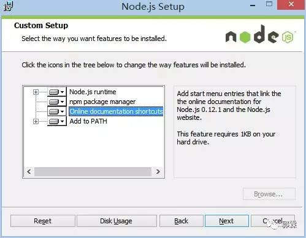
保持默认设置即可，一路Next，安装很快就结束了。 然后我们检查一下是不是要求的组件都安装好了，同时按下 Win 和 R，打开运行窗口：
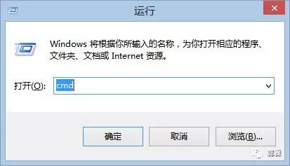
在新打开的窗口中输入cmd，敲击回车，打开命令行界面。（下文将直接用打开命令行来表示以上操作，记住哦~） 在打开的命令行界面中，输入：
node -v
npm -v
如果结果如下图所示，则说明安装正确，可以进行下一步了，如果不正确，则需要回头检查自己的安装过程。
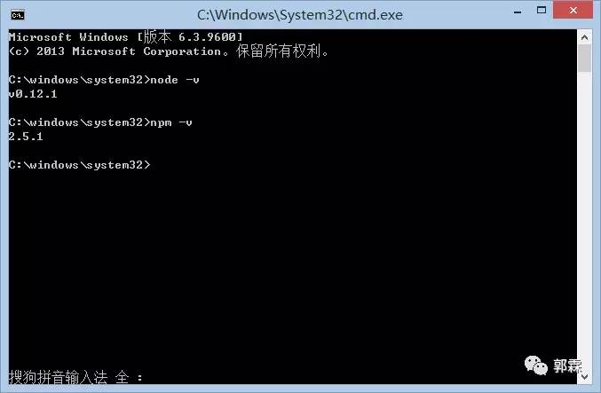
下载Git安装文件：
https://git-scm.com/downloads
然后就进入了Git的安装界面，如图：
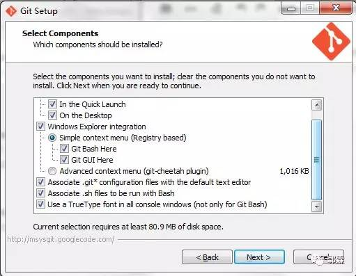
和 Node.js 一样，大部分设置都只需要保持默认，但是出于我们操作方便考虑，建议 PATH 选项按照下图选择：
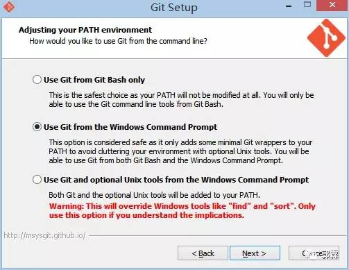
这是对上图的解释，不需要了解请直接跳过 Git 的默认设置下，出于安全考虑，只有在 Git Bash 中才能进行 Git 的相关操作。按照上图进行的选择，将会使得 Git 安装程序在系统 PATH 中加入 Git 的相关路径，使得你可以在 CMD 界面下调用 Git，不用打开 Git Bash 了。
一样的，我们来检查一下Git是不是安装正确了，打开命令行，输入：
git –version
如果结果如下图所示，则说明安装正确，可以进行下一步了，如果不正确，则需要回头检查自己的安装过程。
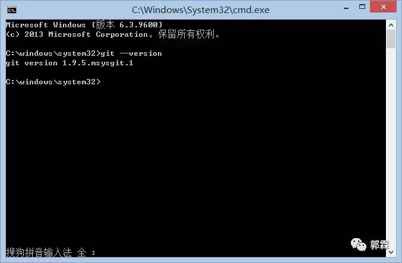
到此搭建 Hexo博客 的相关环境配置已经完成，下面开始讲解 Hexo 的相关配置。
在自己认为合适的地方创建一个文件夹，这里我以E：/hexo 为例子讲解，首先在E盘目录下创建Hexo文件夹，并在命令行的窗口进入到该目录：
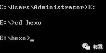
在命令行中输入：
npm install hexo-cli -g
然后你将会看到:
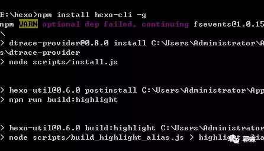
可能你会看到一个WARN，但是不用担心，这不会影响你的正常使用。 然后输入：
npm install hexo –save
然后你会看到命令行窗口刷了一大堆白字，下面我们来看一看Hexo是不是已经安装好了。 在命令行中输入：
hexo -v
如果你看到了如图文字，则说明已经安装成功了。
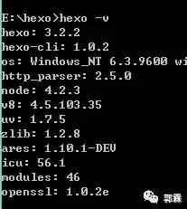
如果你之前已经配置好git个人信息，请跳过这个步骤
设置 Git 的 user name 和 email：(如果是第一次的话)
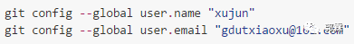
生成密钥
ssh-keygen -t rsa -C “gdutxiaoxu@163.com”
同样在 _config.yml 文件中，找到 Deployment，然后按照如下修改：
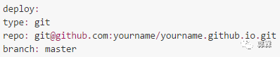
新建一篇博客，执行下面的命令：
hexo new post “article title”
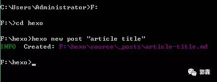
这时候在我的 电脑的目录下 F:\hexo\source_posts 将会看到 article title.md 文件
用MarDown编辑器打开就可以编辑文章了。文章编辑好之后，运行生成、部署命令：
hexo g // 生成
hexo d // 部署
当然你也可以执行下面的命令，相当于上面两条命令的效果：
hexo d -g #在部署前先生成
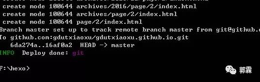
踩坑提醒
每个不同的主题会需要不同的配置，主题配置文件在主题目录下的 _config.yml。有两个比较好的主题推荐给大家。
Yilia
http://litten.me
Yilia 是为 hexo 2.4+制作的主题。崇尚简约优雅，以及极致的性能。
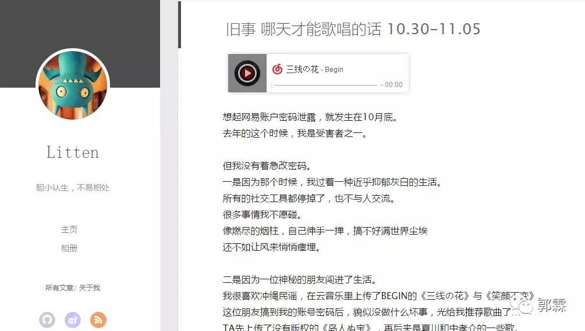
NexT
我的网站就是采用这个主题，简洁美观。目前Github上Star最高的Hexo主题，支持几种不同的风格。作者提供了非常完善的配置说明。
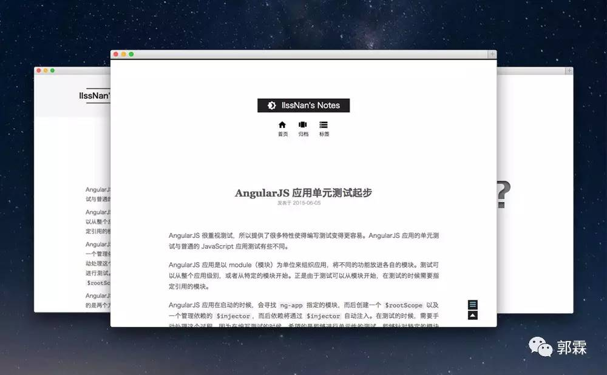
NexT
http://theme-next.iissnan.com/getting-started.html
在 Hexo 中有两份主要的配置文件，其名称都是 _config.yml。 其中，一份位于站点根目录下，主要包含 Hexo 本身的配置；另一份位于主题目录下，这份配置由主题作者提供，主要用于配置主题相关的选项。
为了描述方便，在以下说明中，将前者称为 站点配置文件， 后者称为 主题配置文件。
比如我的电脑下的 F:\hexo 目录下的成为 站点配置文件，F:\hexo\themes\next 目录下的成为主题配置文件。
Hexo 安装主题的方式非常简单，只需要将主题文件拷贝至站点目录的 themes 目录下， 然后修改下配置文件即可。具体到 NexT 来说，安装步骤如下。
如果你熟悉 Git， 建议你使用 克隆最新版本 的方式，之后的更新可以通过 git pull 来快速更新， 而不用再次下载压缩包替换。
在终端窗口下，定位到 Hexo 站点目录下。使用 Git 命令：
cd your-hexo-site
git clone https://github.com/iissnan/hexo-theme-next.git
与所有 Hexo 主题启用的模式一样。 当 克隆/下载 完成后，打开 站点配置文件， 找到 theme 字段，并将其值更改为 next。启用 NexT 主题：
theme: next
到此，NexT 主题安装完成。下一步我们将验证主题是否正确启用。在切换主题之后、验证之前， 我们最好使用 hexo clean 来清除 Hexo 的缓存。
首先启动 Hexo 本地站点，并开启调试模式（即加上 –debug），整个命令是 hexo s –debug。 在服务启动的过程，注意观察命令行输出是否有任何异常信息，如果你碰到问题，这些信息将帮助他人更好的定位错误。 当命令行输出中提示出：
INFO Hexo is running at http://0.0.0.0:4000/. Press Ctrl+C to stop.
此时即可使用浏览器访问 http://localhost:4000 ，检查站点是否正确运行。
当你看到站点的外观与下图所示类似时即说明你已成功安装 NexT 主题。这是 NexT 默认的 Scheme —— Muse
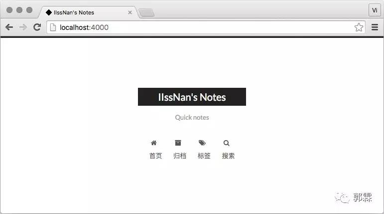
现在，你已经成功安装并启用了 NexT 主题。下一步我们将要更改一些主题的设定，包括个性化以及集成第三方服务。
选择 Scheme
Scheme 是 NexT 提供的一种特性，借助于 Scheme，NexT 为你提供多种不同的外观。同时，几乎所有的配置都可以 在 Scheme 之间共用。目前 NexT 支持三种 Scheme，他们是：
Muse - 默认 Scheme，这是 NexT 最初的版本，黑白主调，大量留白
Mist - Muse 的紧凑版本，整洁有序的单栏外观
Pisces - 双栏 Scheme，小家碧玉似的清新
Scheme 的切换通过更改 主题配置文件，搜索 scheme 关键字。 你会看到有三行 scheme 的配置，将你需用启用的 scheme 前面
注释 # 即可。
选择 Pisce Scheme
#scheme: Muse
#scheme: Mist
scheme: Pisces
编辑 站点配置文件， 将 language 设置成你所需要的语言。建议明确设置你所需要的语言，例如选用简体中文，配置如下：
language: zh-Hans
目前 NexT 支持的语言如以下表格所示：
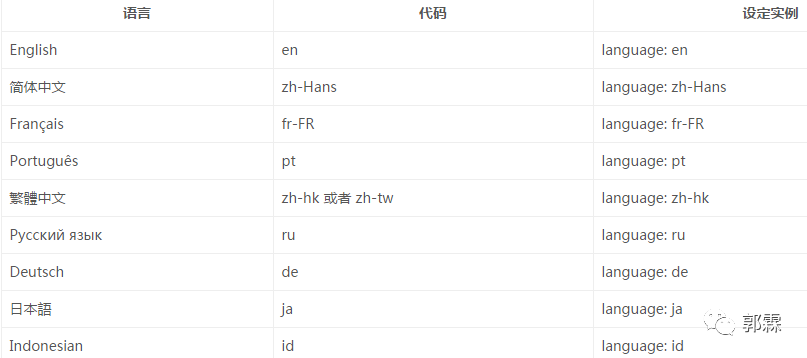
菜单配置包括三个部分，第一是菜单项（名称和链接），第二是菜单项的显示文本，第三是菜单项对应的图标。 NexT 使用的是 Font Awesome 提供的图标， Font Awesome 提供了 600+ 的图标，可以满足绝大的多数的场景，同时无须担心在 Retina 屏幕下 图标模糊的问题。
编辑 主题配置文件，修改以下内容：
设定菜单内容，对应的字段是 menu。 菜单内容的设置格式是：item name: link。其中 item name 是一个名称，这个名称并不直接显示在页面上，她将用于匹配图标以及翻译。
菜单示例配置：
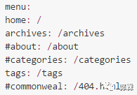
若你的站点运行在子目录中，请将链接前缀的 / 去掉
NexT 默认的菜单项有（标注 的项表示需要手动创建这个页面）：
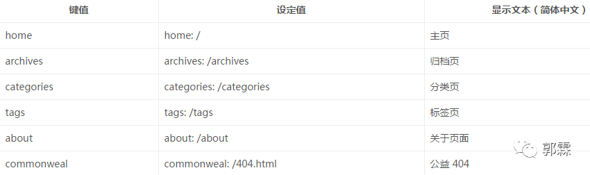
设置菜单项的显示文本。在第一步中设置的菜单的名称并不直接用于界面上的展示。Hexo 在生成的时候将使用 这个名称查找对应的语言翻译，并提取显示文本。这些翻译文本放置在 NexT 主题目录下的 languages/{language}.yml （{language} 为你所使用的语言）。
以简体中文为例，若你需要添加一个菜单项，比如 something。那么就需要修改简体中文对应的翻译文件 languages/zh-Hans.yml，在 menu 字段下添加一项：
menu:home: 首页
archives: 归档
categories: 分类
tags: 标签
about: 关于
search: 搜索
commonweal: 公益404
something: 有料
设定菜单项的图标，对应的字段是 menu_icons。 此设定格式是 item name: icon name，其中 item name 与上一步所配置的菜单名字对应，icon name 是 Font Awesome 图标的 名字。而 enable 可用于控制是否显示图标，你可以设置成 false 来去掉图标。
菜单图标配置示例
menu_icons:enable: true
home: home
about: user
categories: th
tags: tags
archives: archive
commonweal: heartbeat
在菜单图标开启的情况下，如果菜单项与菜单未匹配（没有设置或者无效的 Font Awesome 图标名字） 的情况下，NexT 将会使用 作为图标。
请注意 键值（如 home）的大小写要严格匹配
默认情况下，侧栏仅在文章页面（拥有目录列表）时才显示，并放置于右侧位置。 可以通过修改 主题配置文件 中的 sidebar 字段来控制侧栏的行为。侧栏的设置包括两个部分，其一是侧栏的位置， 其二是侧栏显示的时机。
设置侧栏的位置，修改 sidebar.position 的值，支持的选项有：
left - 靠左放置
right - 靠右放置
目前仅 Pisces Scheme 支持 position 配置。影响版本5.0.0及更低版本。
sidebar:
position: left
设置侧栏显示的时机，修改 sidebar.display 的值，支持的选项有：
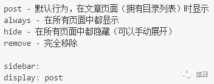
已知侧栏在 use motion: false 的情况下不会展示。 影响版本5.0.0及更低版本。
编辑 站点配置文件， 新增字段 avatar， 值设置成头像的链接地址。其中，头像的链接地址可以是：
完整的互联网 URI：http://example.com/avtar.png
站点内的地址：将头像放置主题目录下的 source/uploads/ （新建uploads目录若不存在） 配置为：avatar: /uploads/avatar.png 或者 放置在 source/images/ 目录下 , 配置为：avatar: /images/avatar.png
编辑 站点配置文件， 设置 author 为你的昵称。
编辑 站点配置文件， 设置字段为你的站点描述。站点描述可以是你喜欢的一句签名:)
添加 sitemap 和 feed 插件。切换到你本地的 hexo 目录CIA，在命令行窗口，输入以下命令：
npm install hexo-generator-feed -save
npm install hexo-generator-sitemap -save
修改 _config.yml，增加以下内容：
再执行以下命令，部署服务端：
hexo d -g
配完之后，就可以访问 https://gdutxiaoxu.github.io/atom.xml 和 https://gdutxiaoxu.github.io/sitemap.xml ，发现这两个文件已经成功生成了。
GitHub Pages有提供制作404页面的指引：
Custom 404 Pages
https://help.github.com/articles/creating-a-custom-404-page-for-your-github-pages-site
直接在根目录下创建自己的 404.html 或者 404.md 就可以。但是自定义404页面仅对绑定顶级域名的项目才起作用，GitHub默认分配的二级域名是不起作用的，使用 hexo server 在本机调试也是不起作用的。
推荐使用，腾讯公益404：
http://www.qq.com/404
我的404页面配置如下：
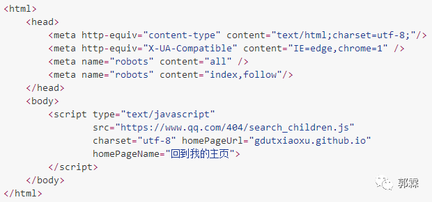
Hexo主页
https://hexo.io
史上最详细的Hexo博客搭建图文教程
https://xuanwo.org/2015/03/26/hexo-intor